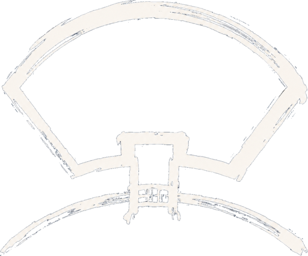

Dejima alphaUp and running in minutes
One line on the server, one word to run. The installer handles Tailscale, Docker, and the background service for you — there's no infrastructure to build.
Get started
Two ways to run it. Most people want the first one.
Run it locally on your computer
most commonYour daily computer. A single install is the whole thing: the server and the client on the same box, with nothing separate to connect.
1Install it
curl -fsSL https://dejima.tech/install.sh | bashmacOS or Linux. Sets up Docker, Tailscale, the island image, and the background daemon. Idempotent, so it's safe to re-run.
2Run it
dejimaThe dashboard opens and walks you to your first sandboxed agent. That's the whole setup.
Run it as a server (e.g. Mac mini), use it from any computer
The daemon runs on an always-on box, a Mac mini in the closet or a Linux server, and you drive it from any computer. Set up the server first, then each computer you connect from.
On the server
The always-on box that hosts the islands. macOS or Linux.
1Install
curl -fsSL https://dejima.tech/install.sh | bash2Provision the host
dejima onboard --provision-hostmacOS: turns a fresh Mac mini into a server in one command (never-sleep power, Tailscale, Docker, the daemon). On Linux the installer already registered the service, so just run dejima to confirm it's up. Either way, note the DEJIMA_HOST it prints (e.g. 100.84.12.7:7273).
On your computer
The client CLI that drives the server. macOS, Linux, or Windows.
1Install the client
macOS / Linux
curl -fsSL https://dejima.tech/install-client.sh | bashWindows (PowerShell)
irm https://dejima.tech/install-client.ps1 | iexPrefer a package manager? The client is on Homebrew and npm too: brew install aoos/dejima/dejima (macOS) or npm i -g dejima (any platform, handy on Windows or if you already use Node). These install just the CLI, so you point it at your server in step 2.
2Connect
dejimaIf you used the guided installer above, it captured your server's address, so this just connects. Installed via brew or npm? Point it at your server once with dejima profile add mini <host>:7273 && dejima profile switch mini. Joining a teammate's server instead? They send you an invite (they run dejima token invite --role operator --host <addr>) and you run dejima join <invite>.
Full install details, platform by platform
The two paths above are the short version. This section is the same install, broken out for each platform, so you can see exactly what the installer does. Pick the side you're setting up: on one machine it's the server (that install includes the client). A separate client is just the CLI that drives a remote server, from install-client.sh, brew install aoos/dejima/dejima, or npm i -g dejima.
The installers below handle Tailscale (offer to install it,
walk you through sign-in) and — on the client side — capture the server's
address into DEJIMA_HOST for you. No manual steps in between.
Server on macOS. Mac mini (typical), or any always-on Mac. The Dejima daemon runs here; other devices connect to it.
- Open Terminal. Press ⌘-Space, type Terminal, hit Enter. Any working directory is fine — the installer uses
~/.dejima-srcregardless. - Run the installer:
curl -fsSL https://dejima.tech/install.sh | bashIt does all of this in order:
- Offers to install Tailscale (Homebrew) if missing, then walks you through
sudo tailscale up— a browser tab opens to sign in to your tailnet. - Offers to install Docker Desktop (or detects OrbStack / colima) — needed to run islands.
- Builds the
dejima+dejimadbinaries, installs them to/usr/local/bin, builds the island image, registersdejimadas a launchd service, runsdejima doctor. - Captures the server's tailnet IP into
~/.dejima/host.jsonand prints theDEJIMA_HOSTstring you'll use on your other devices.
Idempotent — re-run any time to update or finish a partial run.
- Offers to install Tailscale (Homebrew) if missing, then walks you through
- (Optional) Get push notifications on your phone when islands change state:
dejima service install --notify https://ntfy.sh/your-private-topic - Open the dashboard:
dejima # interactive TUI
Note the DEJIMA_HOST the installer prints
(something like 100.84.12.7:7273) — you'll plug it into the
client setup on your other devices.
Server on Linux. Always-on home server, VPS, or any Linux box. The Dejima daemon runs here; other devices connect to it.
- Open a terminal. Your usual one (GNOME Terminal, Konsole, Alacritty, an SSH session, whatever). Any working directory is fine — the installer uses
~/.dejima-src. - Install Docker (the installer doesn't bootstrap Docker on Linux):
sudo apt install docker.io # Debian / Ubuntu # sudo dnf install docker # Fedora # sudo pacman -S docker # Arch sudo systemctl enable --now docker sudo usermod -aG docker $USER # log out + back in for group to take effect - Run the installer:
curl -fsSL https://dejima.tech/install.sh | bashIt does all of this in order:
- Offers to install Tailscale (official install script) if missing, then walks you through
sudo tailscale up. - Builds the
dejima+dejimadbinaries, installs them to/usr/local/bin, builds the island image, registersdejimadas a systemd user unit, runsdejima doctor. - Captures the server's tailnet IP into
~/.dejima/host.jsonand prints theDEJIMA_HOSTstring for your other devices.
Idempotent — re-run any time.
- Offers to install Tailscale (official install script) if missing, then walks you through
- (Optional) Phone push notifications:
dejima service install --notify https://ntfy.sh/your-private-topic - Open the dashboard:
dejima # interactive TUI
Note the DEJIMA_HOST the installer prints
— you'll plug it into the client setup on your other devices.
The Dejima server is Unix-only. The daemon needs Docker + tmux, which means macOS or Linux. Use a Mac mini, an always-on Linux box, or a VPS. Your Windows PC can still be a client — pick Client above.
Client on macOS. Mac laptop or desktop that will connect to your remote Dejima server.
- Open Terminal. ⌘-Space → Terminal → Enter.
- Run the client installer:
curl -fsSL https://dejima.tech/install-client.sh | bashIt does all of this in order:
- Offers to install Tailscale if missing, then walks you through
sudo tailscale up— sign in to the same tailnet as your server. - Downloads the latest
dejimaCLI from GitHub Releases, verifies SHA256, installs to/usr/local/bin/dejima. - Prompts for your server's tailnet IP (the one the server installer printed — e.g.
100.84.12.7), probes it on port7273, and persistsDEJIMA_HOSTto~/.zshenv.
Already on the tailnet and just want the CLI?
brew install aoos/dejima/dejimaornpm i -g dejimainstalls the client binary on its own; then point it at your server by settingDEJIMA_HOSTyourself, or withdejima profile add mini <host>:7273 && dejima profile switch mini. - Offers to install Tailscale if missing, then walks you through
- Open the dashboard:
dejima # interactive TUI
Client on Linux. Linux laptop or desktop that will connect to your remote Dejima server.
- Open a terminal. Your usual one.
- Run the client installer:
curl -fsSL https://dejima.tech/install-client.sh | bashIt does all of this in order:
- Offers to install Tailscale (official install script) if missing, then walks you through
sudo tailscale up— sign in to the same tailnet as your server. - Downloads the latest
dejimaCLI from GitHub Releases, verifies SHA256, installs to/usr/local/bin/dejima. - Prompts for your server's tailnet IP, probes it on port
7273, and persistsDEJIMA_HOSTto~/.bashrc.
Already on the tailnet and just want the CLI?
npm i -g dejima,brew install aoos/dejima/dejima, or the binary from the latest GitHub Release installs it on its own; then point it at your server by settingDEJIMA_HOSTyourself, or withdejima profile add mini <host>:7273 && dejima profile switch mini. - Offers to install Tailscale (official install script) if missing, then walks you through
- Open the dashboard:
dejima # interactive TUI
Client on Windows. Windows PC that will connect to your remote Dejima server. The daemon is Unix-only, but the client CLI runs on Windows.
- Open PowerShell. Press the Windows key, type PowerShell, press Enter. Any working directory is fine.
- Run the client installer:
irm https://dejima.tech/install-client.ps1 | iexIt does all of this in order:
- Offers to install Tailscale via
wingetif missing. Then points you at the system-tray icon: right-click → Log in, sign in to the same tailnet as your server. (Tailscale sign-in is GUI-driven on Windows, so the installer can't fully automate it.) - Downloads
dejima.exefrom the latest GitHub Release, verifies SHA256, extracts to%LOCALAPPDATA%\dejima, and adds it to your User PATH. - Prompts for your server's tailnet IP, probes it on port
7273viaTest-NetConnection, and persistsDEJIMA_HOSTto your User environment.
Just want the CLI without the guided steps?
npm i -g dejimainstalls it on any machine with Node, or downloaddejima.exefrom the latest GitHub Release and add it to your PATH; then setDEJIMA_HOSTto your server yourself. - Offers to install Tailscale via
- Close + reopen PowerShell so the new
PATHandDEJIMA_HOSTtake effect. - Open the dashboard:
dejima # interactive TUI
Run it yourself
In the dashboard, everything is a keypress; outside it, everything is a one-shot command.
dejima # the dashboard
# In the dashboard:
# n → pick a repo + agent, launch + → add another agent
# ⏎ → open an island/agent in a window ? → all keys
dejima init --repo git@github.com:you/foo.git # or --local-copy for unpushed work
dejima ls # all islands, last-used first
dejima agent add foo --type codex # a 2nd agent in foo's island
dejima connect foo # attach to the island shell
dejima connect foo/a1 # attach to a specific agent (e.g. a1)
DEJIMA_HOST=mac-mini.tailnet:7273 dejima connect foo # …from your laptop
Detach, don't exit. To leave a session, press Ctrl-b then d — it detaches and leaves the agent running. Typing exit can drop you into a reconnect loop. To reach a specific agent rather than a plain /workspace shell, attach by island/agent (e.g. dejima connect foo/a1).
CLI reference
| Command | Purpose |
|---|---|
dejima | Interactive dashboard — browse, manage, and launch islands. n new · ? help. |
dejima init | Provision a new island from a git URL or a local path. |
dejima connect | Attach to an island's session (multi-attach). |
dejima ls | List all islands. |
dejima status | One island in detail: presence, memory, CPU. |
dejima hibernate / wake | Stop / restart the container; volumes preserved. |
dejima reset | Clear agent state. Preserves workspace. |
dejima exec / cp / logs | One-shot command, file copy, log tail — no session attach. |
dejima doctor | Health check: daemon, Docker, image, projects, webhooks. |
dejima service | Install / uninstall dejimad as a host service. |
dejima webhook | Subscribe a URL to receive state-change events. |
dejima purge | Destroy island and volumes. |
Concepts
| Term | Meaning |
|---|---|
Island | The container holding one project and one or more agents. |
Agent | One CLI (Claude Code, Codex) or headless process inside an island, on its own git worktree. |
Bridge | The brokered I/O channel between host and island. |
Trade | A brokered, append-only export of changes from island to host. |
Intake | Read-only files brokered into the island from the host. |
Ledger | A tamper-evident, hash-chained audit log of every brokered transaction. |
Intake / Trade / Ledger are the brokered-context primitives — the seam a memory or context layer attaches to without breaking island isolation. See the positioning note.
Uninstall
Get your work out first. Dejima never touches your host folders — but work done inside an island lives in that island's Docker volume, and dejima purge destroys it. Before removing anything, make sure each island's work is pushed to its remote (or copied out):
dejima exec foo -- git status # anything uncommitted or unpushed?
dejima exec foo -- git push # send it to your remote
dejima cp foo:/workspace/file ./ # or copy files out directly
Then remove Dejima from the server:
dejima purge <name> # each island: container + volumes
dejima service uninstall # stop + deregister the daemon
sudo rm /usr/local/bin/dejima /usr/local/bin/dejimad
rm -rf ~/.dejima ~/.dejima-src # state + config, source checkout
On a client device, uninstalling is just deleting the dejima binary and removing DEJIMA_HOST from your shell profile. Docker and Tailscale are left in place — Dejima uses them but didn't install-own them; remove them separately if nothing else needs them.